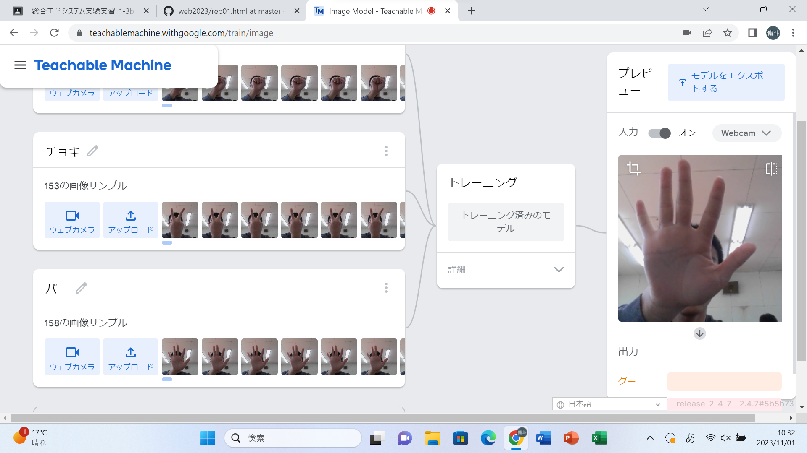
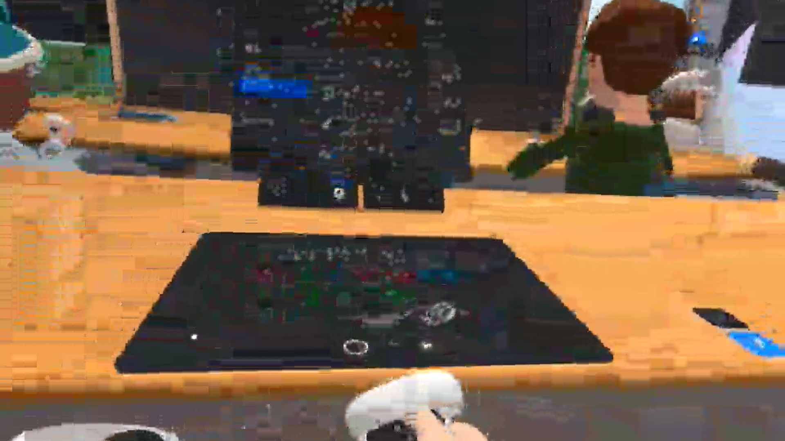

第2週目
2-1 １週目のレポートをHTMLで作る
１週目のレポート
1.内容
Githubを用いてhtmlでレポートを作成した。スクラッチで作成したプログラムの写真をアップロードし、その学習での感想を書いた。
2.感想
画像を張り付けたり、先生が作ってくれたレポートを編集するだけで簡単に自分のレポートを作成することが出来た。スクラッチの使い方が理解できた。
2-2 機械学習体験

1.内容
Teachable Machineを用いてグー、チョキ、パーをそれぞれ判別するようパソコンに学ばせた。それぞれ150枚程度の写真を撮った。
2.感想
たったの150枚でグー、チョキ、パーの判別が出来た。より正確にするためには写真の量や角度、近さなど様々なことを考えて写真を撮ることが大切だと思う。
2-3 VR（バーチャルリアリティー：Virtual Reality）会議室の体験

1.内容
MetaQuestを用いてクラスの人たちがいる仮想空間へ行った。二人一組で作業し、一人はVR体験、もう一人はミラーリングPCを操作した。
2.感想
操作方法などはだいたい理解していたが、何人かと同じ空間に行くということは初めてだったのでとても楽しかった。落書きをしたり、隣には人がいないのに本当にそこにいるかのように会話出来て凄かった。